- 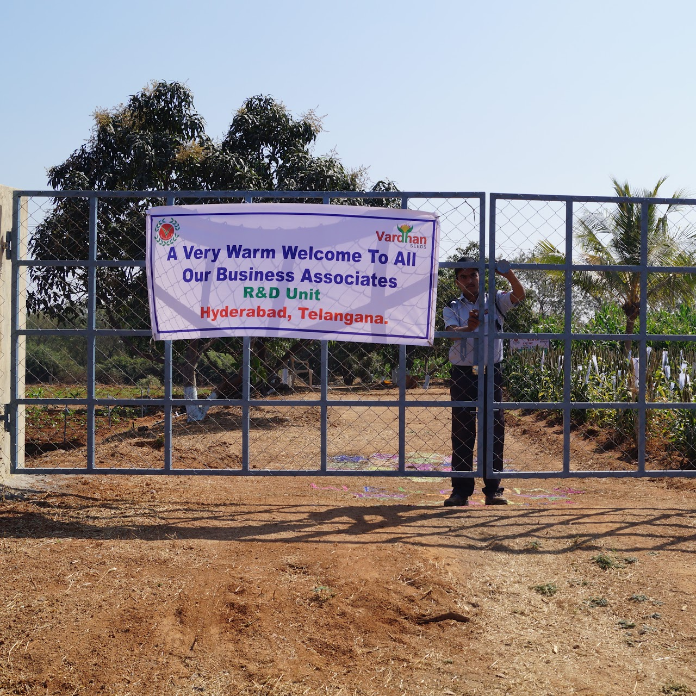
R&D Unit (Medchal)
- 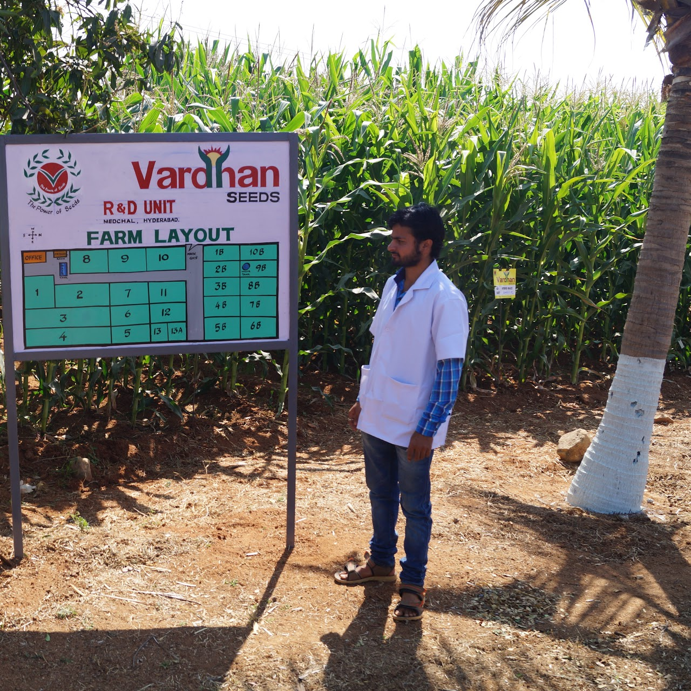
Maize Trail Plot
- 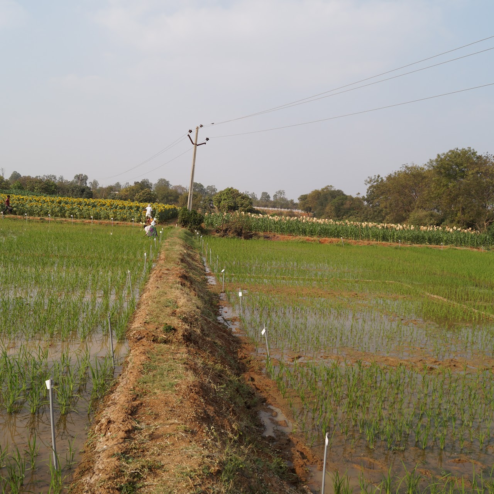
Paddy Trail

Maize Selfing
- 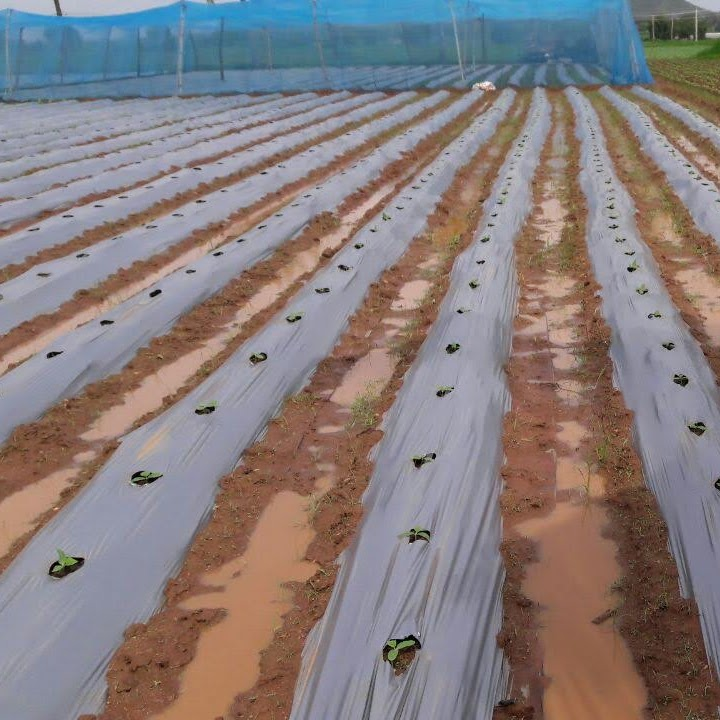
Vegetable Parent Seed Development
- 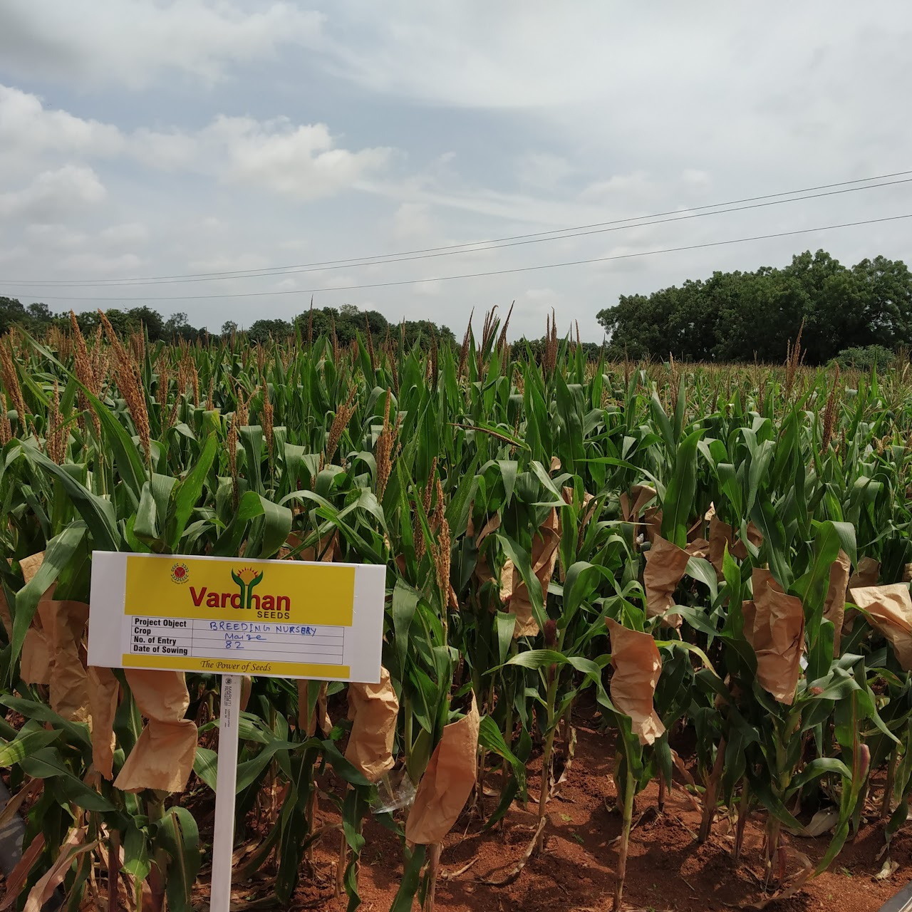
Hybrid Maize Crossing
- 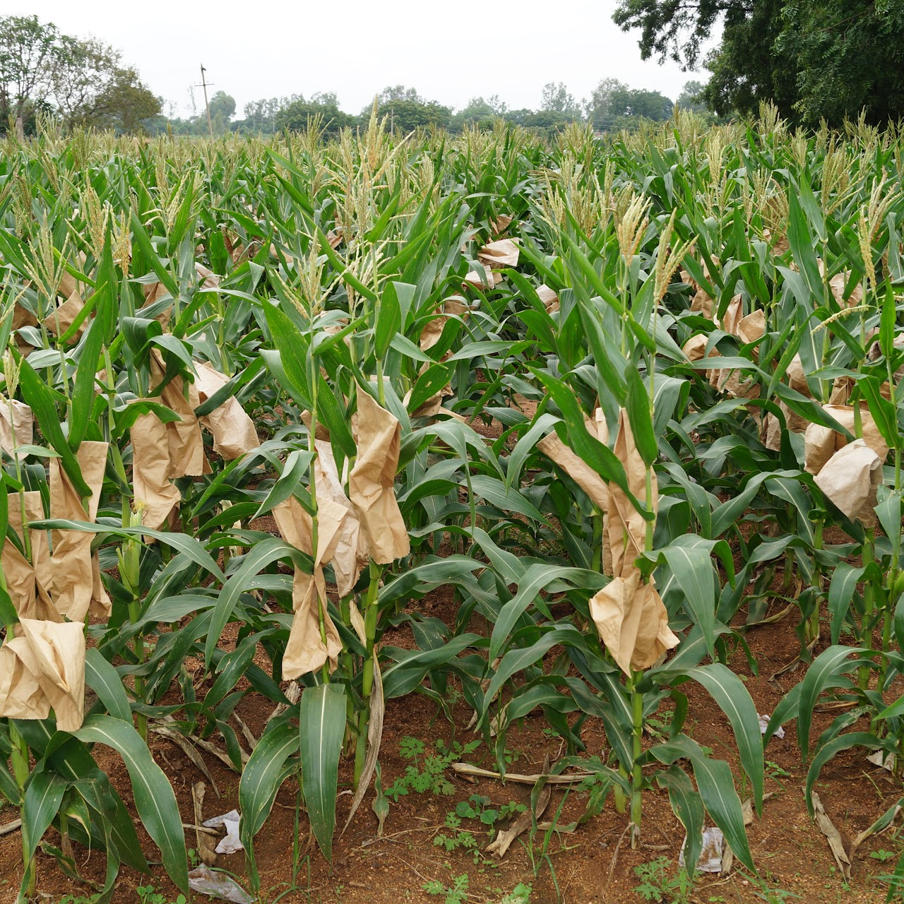
Hybrid Maize Parent Seed Development
- 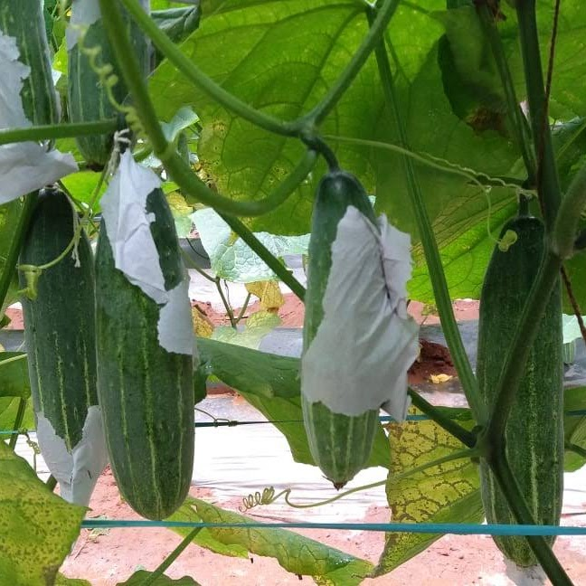
Hybrid Cucumber Crossing
- 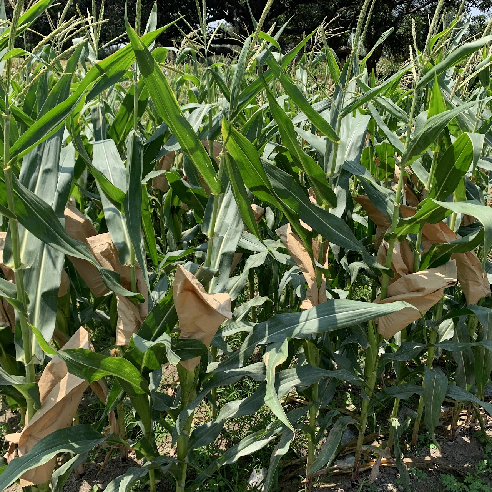
Maize Parent Selfing
- 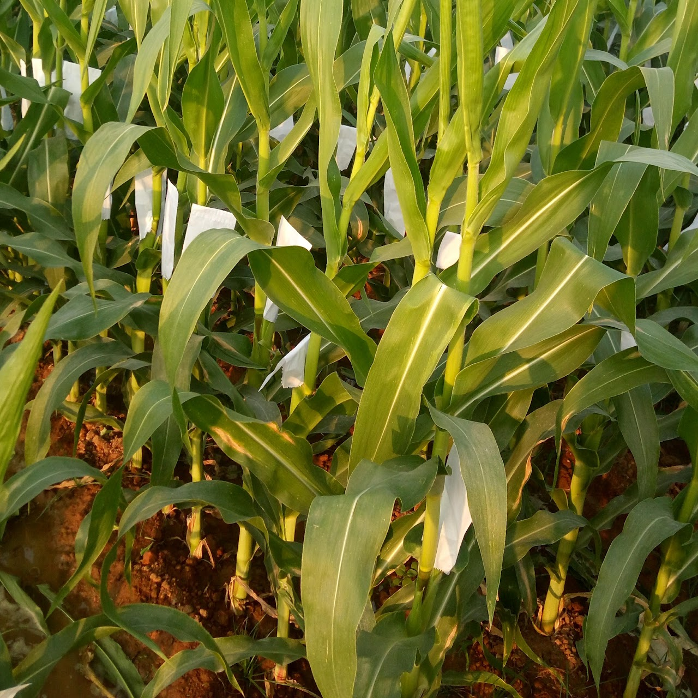
Maize Silking
- 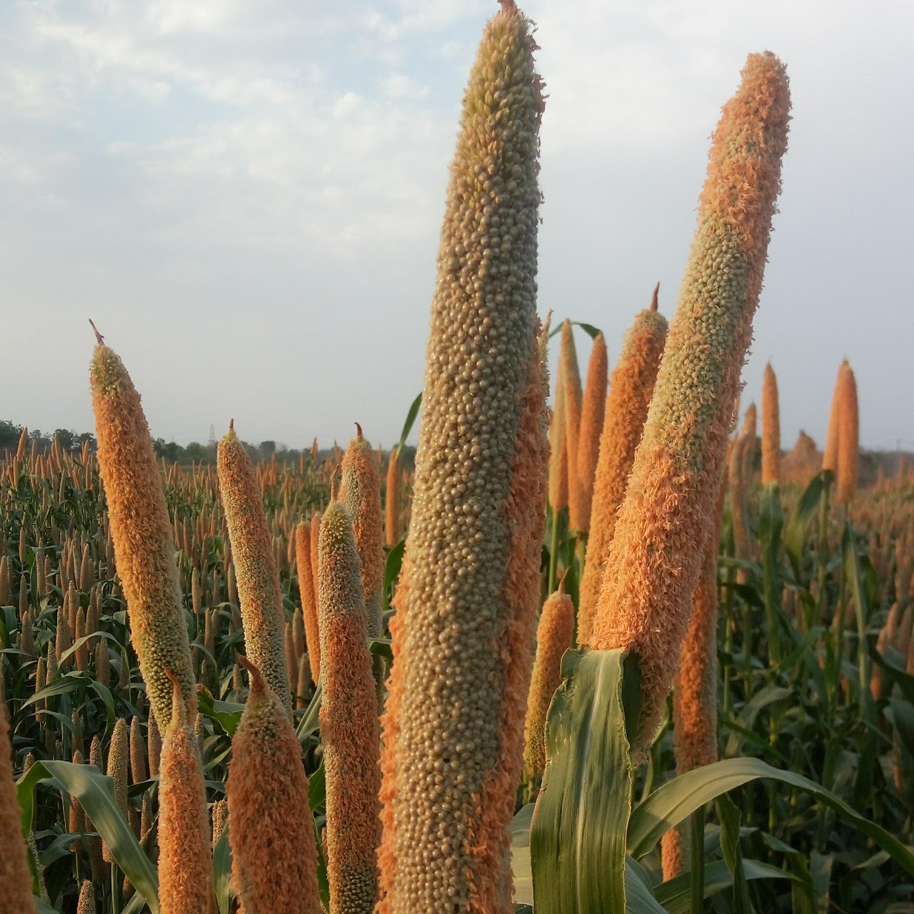
Hybrid Pearl Millet Production
- 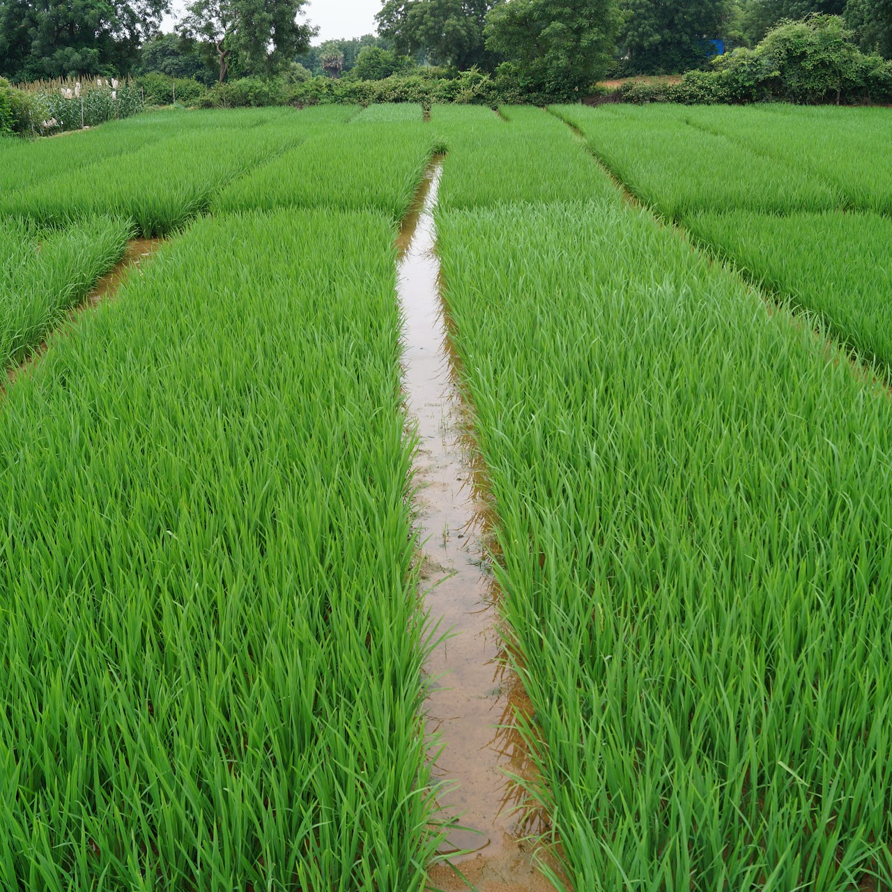
Hybrid Paddy Trail